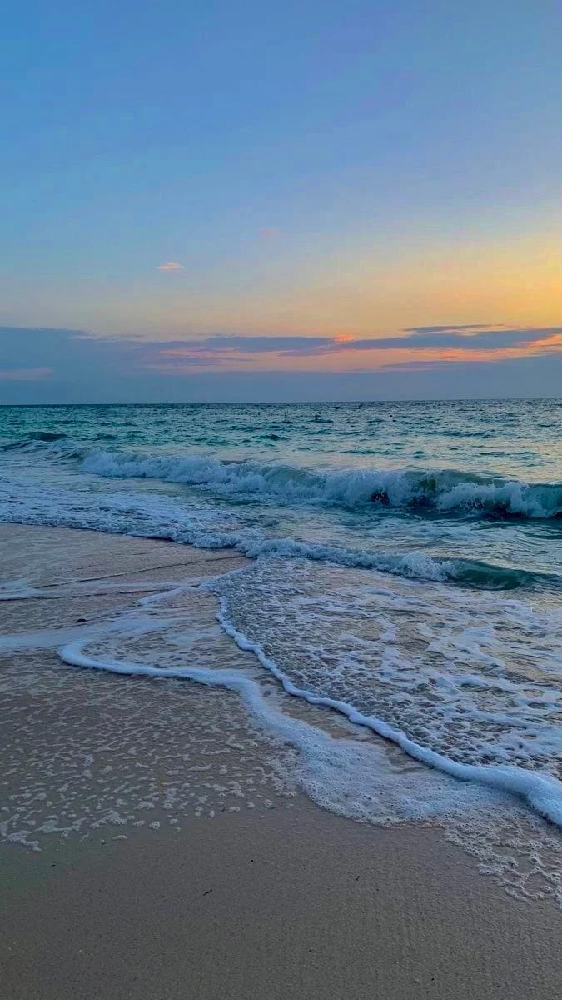

We clean when we can.
A walk, a spare afternoon, a trip to the beach. Small cleanups count, without a weekly quota.
SMALL ACTIONS. LESS TRASH.
We pick up litter when we can, weigh what we collect, and share the progress. You can follow along or voluntarily support cleaner communities.

Weigh it. Share it. Keep going.
OUR MISSION
That bottle by the sidewalk. The wrapper on the beach. The litter that everyone walks past. We’re here to pick it up.
Pounds for Planet starts with a simple act: picking up the litter around us. There is no fixed cleanup schedule or donation-driven quota. We track the pounds we actually remove, and invite people to support the mission if they want to.
HOW THE PROJECT WORKS
A straightforward idea, with every cleanup
built around measurable work.
A walk, a spare afternoon, a trip to the beach. Small cleanups count, without a weekly quota.
Record the net weight, location, and date. Share photos so the progress comes with proof.
Follow the progress or give voluntarily through our GoFundMe. Gifts support the mission without buying a cleanup promise.
VOLUNTARY SUPPORT
Help cover bags, gloves, and litter grabbers, and support environmental causes. Choose your donation amount on GoFundMe and follow the fundraiser for updates.
A gift supports the mission, on our own schedule.
OUR GOFUNDME
Help get the project started. Your voluntary gift supports cleanup supplies and our plans to contribute to environmental organizations.
Recipient organizations have not been selected yet. We will share spending updates and records of contributions as the project grows.
Donate on GoFundMeChoose your amount and complete your donation on GoFundMe.
Starting totals. Verified cleanup results and donations will be added as they happen.
PROOF, POUND BY POUND
Our impact starts with the first bag.
Our cleanup record will grow from there.
After each cleanup, we plan to share where we went, what we collected, and the weight of litter removed.
A FEW GOOD QUESTIONS
No. Cleanups happen when time allows. A voluntary donation does not purchase a specific number of pounds or create a weekly quota.
We plan to weigh collected litter, subtract the bag or container weight, and share the date, location, photos, and net weight after each cleanup.
Funds raised through this project’s GoFundMe will help cover cleanup supplies and support environmental organizations. Recipient organizations have not been selected yet. We will share how funds are used and records of any contributions. Funds raised and money passed on to organizations will be reported separately.
Yes. Visit our GoFundMe fundraiser to choose an amount and donate. Donations support this project and do not create a cleanup quota or deadline.
It can be a fundraising goal based on litter already removed: 100 pounds collected could inspire a $100 goal. It is not a promise to collect new trash in exchange for your donation.
ONE PLANET. PLENTY OF REASONS TO CARE.
GET IN TOUCH
For cleanup questions, volunteering, and sponsorships.